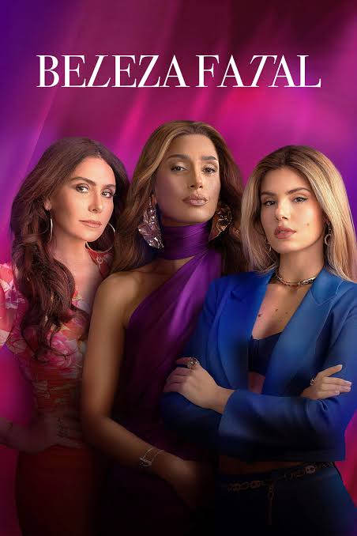
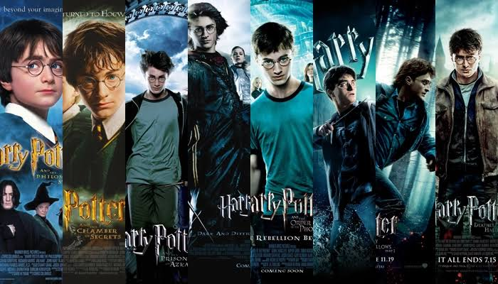
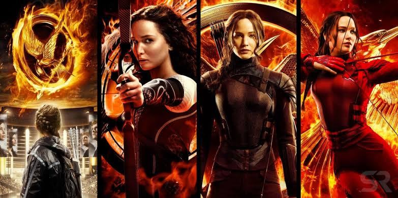
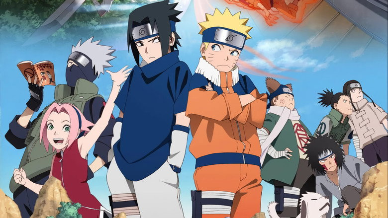
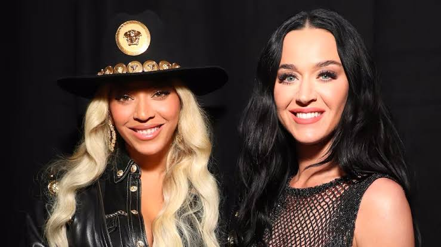
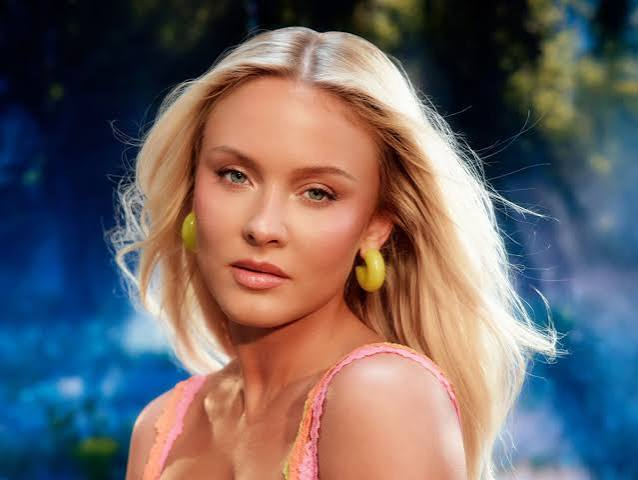
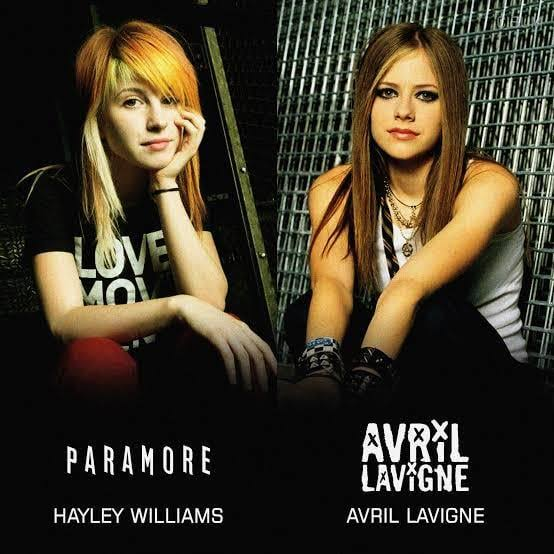
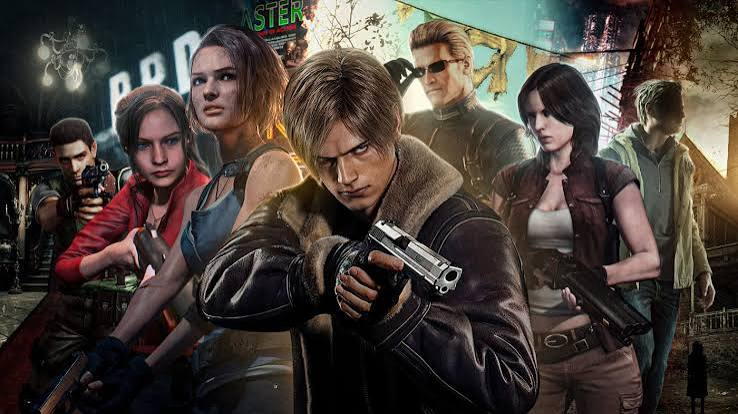
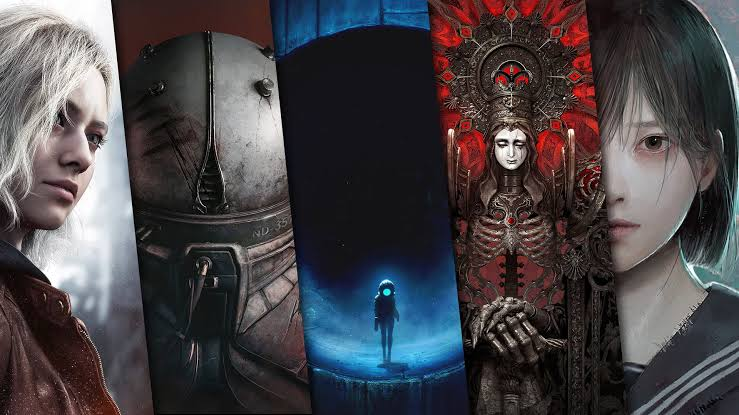
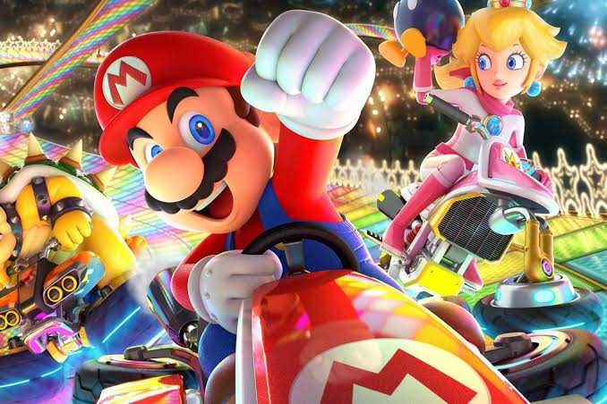

Filmes e Séries
Drama, fantasia, aventura e histórias cheias de reviravoltas.

Beleza Fatal: drama, mistério e muitas reviravoltas.

Harry Potter e seu universo cheio de magia.

Aventura e ação na saga Jogos Vorazes.

E Naruto, um clássico para quem ama anime.
Música e Podcasts
Pop, rock e artistas que não saem da playlist.

Pop internacional com Beyoncé e Katy Perry.

E também Zara Larsson, com seus hits pop.
O pop brasileiro de Anitta, Luísa Sonza e Pedro Sampaio.

Para completar a playlist: Paramore e Avril Lavigne.
Games e Tecnologia
Consoles, adrenalina, sustos e diversão.

PlayStation 5 e Nintendo Switch: cada um com seu estilo.

Tecnologia e diversão no universo gamer.

Resident Evil e suas histórias cheias de tensão.

Jogos de terror para quem gosta de sentir medo.

E partidas divertidas de Mario Kart!